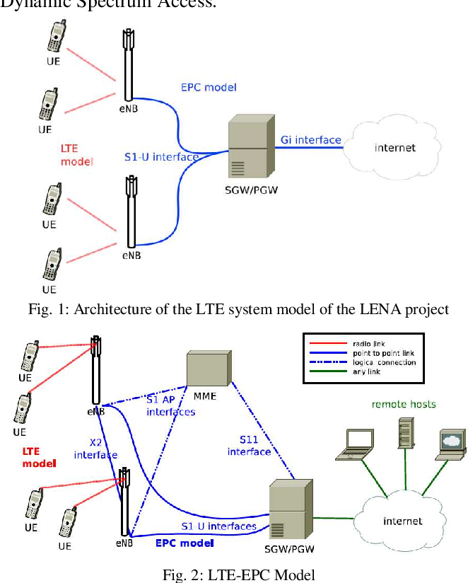

Creato
Per
I professonisti

Giovanni Kernel e il Miglior Kernel mai stato creato.. Ha migliorato le prestazioni- Garuda LInux
dei nostro S.O del400 %
Il Nostro Lavoro di Ottimizzazione Solo per i Nostri Utenti- Giovanni,Fondatore del Giovanni Kernel
Giovanni
Gestore Interattivo Grafico per Facilitare il Controllo e la Impostaizione di GiovanniKernel
Giovanni
Kernel Manager
Gestore Interattivo Grafico per Facilitare il Controllo e la Impostaizione di GiovanniKernel
Fino al 400% Piu Veloce.
Performante, Stabile, Sicuro, Reattivo.<IMG SRC=1x1.gif ALT=layout
Amato Da Migliaglia Di Persone Tutti i Giorni